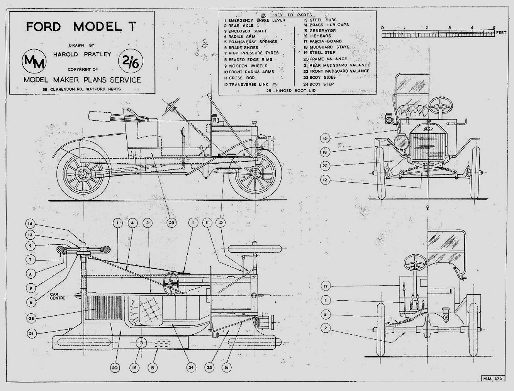
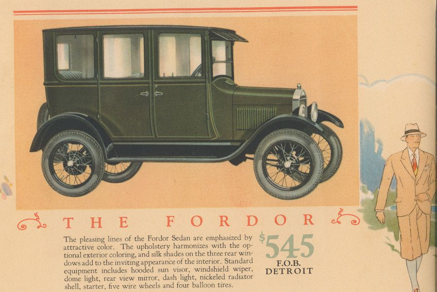
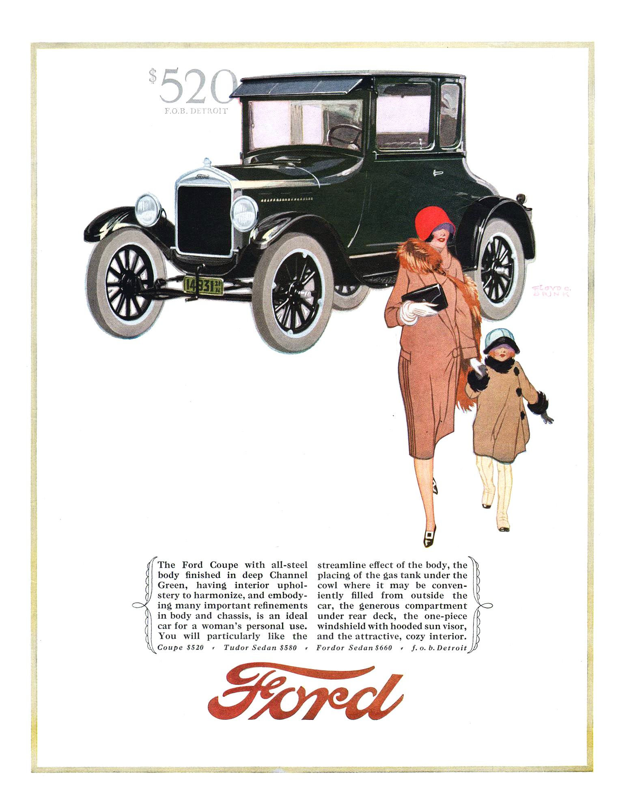

+++
title = "İkonik Arabalar: Ford Model T"
description=""
url="sayi-13/i̇konik-arabalar-ford-model-t"
aciklama="Ford Model T varlıklı-yoksul herkesin bir otomobil alabilme ihtimalinin önünü açan öncü bir otomobildir. Henry Ford otomobillerin sadece varlıklı insanlar tarafından kullanılmasından rahatsız olmuş ve bu durumu nasıl değiştirebileceği üzerine çalışmalar yapmıştır. Bu çalışmaların sonucunda seri üretim bandını temellendiren Henry Ford, Model T’yi ilk seri üretilen otomobil olarak piyasaya sürmüştür."
type="sayfa"
thumb="/img/ford-model-t-thumbnail.jpg"
date = "2021-09-06"
sayi=["13"]
sayfa="02"
yazar=["mucahit vasfi bas"]
tags= ["ana sayfa", "dergi", "henry ford"]
+++

<div class="container">
   <h2>Model T (Tin Lizzie)</h2>
   <div class="row">
      <div class="col-md-6">
         <p>
            Ford Model T varlıklı-yoksul herkesin bir otomobil alabilme
            ihtimalinin önünü açan öncü bir otomobildir. Henry Ford
            otomobillerin sadece varlıklı insanlar tarafından kullanılmasından
            rahatsız olmuş ve bu durumu nasıl değiştirebileceği üzerine
            çalışmalar yapmıştır. Bu çalışmaların sonucunda seri üretim bandını
            temellendiren Henry Ford, Model T’yi <em>ilk</em> seri üretilen
            otomobil olarak piyasaya sürmüştür. Model T o zamanın şartlarında en
            güvenli, en uygun fiyatlı ve en çok satan otomobil olmuştur. Model T
            o kadar çok satmıştır ki
            <em
               >tüm zamanların en çok satan
               <strong>üçüncü</strong> otomobilidir.</em
            >
         </p>
         {{}} {{}}
      </div>
      <div class="col-md-6">
         {{}}         {{}}
      </div>
   </div>
   <h3>Model T Tasarlanıyor</h3>
   <div class="row">
      <div class="col-md-4">
         <p>
            Henry Ford’un Model T’den bazı beklentileri vardı. Bu otomobil uygun
            fiyatlı, kullanımı kolay ve dayanıklı olmalıydı. Bunun üzerine C.
            Harold Wills, Jozsef Galamb ve Eugene Farkas otomobil için
            çalışmalara başladı. Model T öncesi at arabalarından gelen bir
            alışkanlıkla direksiyon otomobilin ortasında bulunmaktaydı. Ford
            Model T ile bu direksiyon simidini sol tarafa almış ve bu sayede
            yolcuların araca daha kolay inip binmesini sağlamıştır. Bu
            değişiklik dünyanın birçok alanında trafiğin sağdan akmasına sebep
            oldu.
         </p>
      </div>
      <div class="col-md-4">
         {{}}
      </div>
      <div class="col-md-4">
         {{}}
      </div>
   </div>

   <h3>Model T’nin Kalbi</h3>
   <div class="row">
      <div class="col-md-4">
         <p>
            Model T’de ön kısımda bulunan ve bir Amerikan otomobilinin olmazsa
            olmazı sıralı sistem bir motoru bulunmaktaydı. 4 silindirli ve 20
            beygir gücüne sahip bu motor saatte 72 km hıza çıkabiliyordu. Bu
            günümüz şartlarına göre bizlere yetersiz gelse de 1908 yılında
            olduğumuzu düşünürsek gayet iyi bir hıza sahipti. Bu motor benzin,
            gazyağı ve etanol ile çalışabiliyordu. Kullanılan yakıta göre araç
            100km de 11 ila 18 litre arası yakıt tüketiyordu. Zamanla benzinin
            azalan maliyeti nedeniyle otomobiller genellikle benzin ile çalışır
            duruma geldiler.
         </p>
         <p>
            Otomobiller 1908 yılından 1919 yılına kadar elle marş sistemini
            kullanarak çalıştırılıyorlardı. Bu sistemde krank miline bağlı bir
            aparatla mil çevriliyor ve motora ilk hareket veriliyordu. 1919-1927
            yılları arasında geliştirilen elektrikli marş sistemi araca
            eklenerek kullanıcıların aracı kolayca çalıştırması sağlanmıştır.
         </p>
      </div>
      <div class="col-md-4">
         {{}}
      </div>
      <div class="col-md-4">
         {{}}
         {{}}
      </div>
   </div>

   <h3>Model T Banda Girdi</h3>
   <div class="row">
      <div class="col-md-4">
         <p>
            1908 yılında üretimine başlanan Model T 1927 yılına kadar
            üretilecekti. Bu otomobil seri üretim bandından çıkan ilk
            otomobildi. Fabrikada çalışan işçilerin dahi alabileceği bir
            otomobil olması planlanan Model T, Henry Ford’un hayallerini
            gerçekleştirecekti.  Model T Ford Motor Company&#39;nin Ford&#39;un
            devrim niteliğindeki Highland Park Fabrikasındaki hareketli montaj
            hattında üretildi. Üretim bandında üretilen bu model ilk başlarda
            850 dolardan satılırken zamanla üretimin hızlanması ve verimliliğin
            artması sayesinde 260 dolara satılmaya başlamıştır.
         </p>
         <p>
            O zamanlar Ford’un fabrikasında günlük 5 dolara çalışan bir işçi 52
            gün çalışarak bir Ford Model T sahibi olabiliyordu.
            <em
               >Ülkemizde ise fabrikada asgari ücretle çalışan bir işçi Ford’un
               en uygun fiyatlı arabası olan Ford Fiesta’yı 77 ay çalışarak
               alabilmektedir.</em
            >
         </p>
      </div>
      <div class="col-md-4">
         {{}}
         {{}}
      </div>
      <div class="col-md-4">
         {{}}
      </p>
      </div>
   </div>

   <h3>Henry Ford Test Ediyor</h3>
   <div class="row">
      <div class="col-md-4">
         {{}}
      </div>
      <div class="col-md-4">
         <p>
            Model T ilk olarak, aracı Wisconsin ve kuzey Michigan&#39;a bir av
            gezisine çıkaran Henry Ford tarafından test edildi. Model T,
            Tennessee Eyaleti Meclis Binası&#39;nın merdivenlerini tırmanmak ve
            Pikes Peak&#39;in zirvesine ulaşmak da dahil olmak üzere
            gerçekleştirdiği gösterilerle ünlendi. Kendi ürününün test
            edilmesinden sonra araç, 1 Ekim 1908 tarihinde ilk müşterisine sevk
            edildi.
         </p>
      </div>
      <div class="col-md-4">
         {{}}
      </div>
   </div>

   <h3>Üretimde Verimlilik</h3>
   <div class="row">
      <div class="col-md-6">
         <p>
            Ford, araçları ucuzlatmak ve tüm ailelerin bir Model T’ye sahip
            olmasını sağlamak için verimliliğe çok önem veriyordu. Kendi bulduğu
            üretim yöntemleri sayesinde zaten araçlar önceden 1.5 günde
            üretilirken şimdi bir aracın üretim bandının başından kullanıma
            hazır hale gelmesi 93 dakikaya inmişti.
         </p>
         <p>
            Ford verimliliğe o kadar önem veriyordu ki siyah boyanın araç
            üzerinde daha hızlı kuruduğu anlaşılınca tüm model T’leri yalnızca
            siyah renkte üretmeye başlamıştır.
         </p>
      </div>
      <div class="col-md-6">
         {{}}
      </div>
   </div>

   <div class=" bg-gri p-md-5">
      <p>
         Müşterilerin farklı renk araç istemeleri üzerine Henry Ford, “<strong
            >Her müşteri, siyah olduğu sürece istediği renge boyanmış bir
            arabaya sahip olabilir</strong
         >” demiştir. Bilinenin aksine tüm Model T’ler siyah üretilmemiştir.
         Otomobil 1914-1925 yılları arasında sadece siyah üretilmiştir. Ama bu
         tarihlerin öncesi ve sonrasında aracın çeşitli modelleri mavi, kırmızı,
         gri ve yeşil dahil olmak renkleri üretilmiştir.
      </p>
   </div>
   
   <div class="row">
      <div class="col-md-6">
         <h3>Model T Her Yerde</h3>
         <p>
            Ford Model T 1908 yılında üretilmeye başlandı. 1920’li yıllara
            gelindiğinde ise dünyada üretilen tüm otomobillerin yarısından
            fazlası Ford Model T olup renkleri siyahtır. Henry Ford’un “Bir
            Ford&#39;u geçmeye çalışmanın faydası yok, çünkü her zaman hemen
            ileride bir tane daha vardır.&quot; sözü Ford’un çok fazla sattığına
            bir göndermedir.
         </p>
         <p>
            Ford Model T 1908-1927 yılları arasında 16 milyondan fazla otomobil
            satmıştır. 1970 yılına kadar dünyanın en çok satılan otomobil modeli
            olan Model T 1970 yılında rekorunu Volkswagen Beetle’a kaptırmıştır.
         </p>
      </div>
      <div class="col-md-6">
         {{}}
      </div>
   </div>

   {{}}
   <h3>Gövde Tipleri</h3>
   <div class="row">
      <div class="col-md-6">
         <p>
            Ford Model T’yi farklı ihtiyaçlara göre farklı gövde tipleriyle
            güncellemiştir. Bu şekilde bir tüccarın veya bir aile babasının da
            model t alması sağlanmıştır.
         </p>
         <p>Bu kasa tipleri:</p>
         <p>
            2-kapı touring (1909-11), 3-kapı touring (1912-1925), 4-kapı touring
            (1926-1927), kapısız roadster (1909-11), 1-kapı roadster(1912-1925),
            2-kapı roadster (1926-1927), roadster pickup (1925-1927), 2-kapı
            coupé (1909-1912,1917-1927), Town car (1909-1918), C-cab wagon
            (1912), 2-(Center)kapı sedan (1915-1923), 2kapı sedan (1924-1927),
            4-kapı sedan (1923-1927), coachbuilder.
         </p>
         {{}}
      </div>
      <div class="col-md-6">
         {{}}
      </div>
   </div>

   <h3>Koç Müzesinde Model T’ler</h3>
   <div class="row">
      <div class="col-md-6">
         <p>
            Dünyayı kasıp kavuran bu Model T’lerden tabi ki ülkemize de
            gelmiştir. Günümüzde Model T’leri görmek isterseniz Rahmi M. Koç
            müzesini ziyaret edebilirsiniz. Koç müzesinde üç farklı gövde
            tipinde Model T bulunmaktadır. Bunlar:
         </p>
         <p>
            Bir ailenin ihtiyaçlarını karşılayacak ve binek araç denildiğinde
            ilk aklımıza gelecek olan <strong>Ford Model T Touring,</strong>
         </p>
         <p>
            Bir çiftçinin veya tüccarın ihtiyaçlarına göre tasarlanan
            <strong>Ford Model T Pick Up,</strong>
         </p>
         <p>
            Yolcu taşıma amaçlı tasalanan <strong>Ford Model TT Bus.</strong>
         </p>
      </div>
      <div class="col-md-6">
         {{}}
         <small>Ford Model T Touring</small>
      </div>
   </div>

   <div class="row">
      <div class="col-md-6">
         {{}}
         <small>Ford Model T Pick Up</small>
      </div>
      <div class="col-md-6">
         {{}}<small>Ford Model TT Bus</small>
      </div>
   </div>
   <button
   class="btn markutbtn"
   data-target="#my-collapse"
   data-toggle="collapse"
   aria-expanded="false"
   aria-controls="my-collapse"
   >
   Kaynaklar
   </button>
   <div id="my-collapse" class="collapse">
   <pre> <small><code>  
      https://corporate.ford.com/articles/history/the-model-t.html

      https://www.history.com/topics/inventions/model-t
      
      http://atamanmuseum.com/1926-ford-model-t/
      
      https://tr.wikipedia.org/wiki/Ford_Model_T#:~:text=Ford Model T (takma%20isimleri,s%C4%B1ralamas%C4%B1nda%203.%20s%C4%B1rada%20yer%20almaktad%C4%B1r.
      
      https://www.si.edu/object/1926-ford-model-t-roadster%3Anmah_739493
      
      https://www.motorcities.org/story-of-the-week/2019/the-ford-model-t-was-an-iconic-automobile
      
      https://www.carbodydesign.com/archive/2008/05/13-ford-model-t-concept-design-challenge/
      
      https://www.motorcities.org/story-of-the-week/2019/the-ford-model-t-was-an-iconic-automobile
     </code></small></pre>
   </div>
</div>
